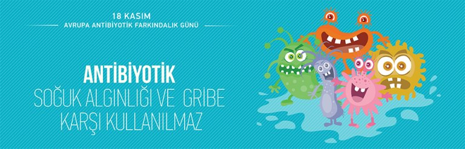
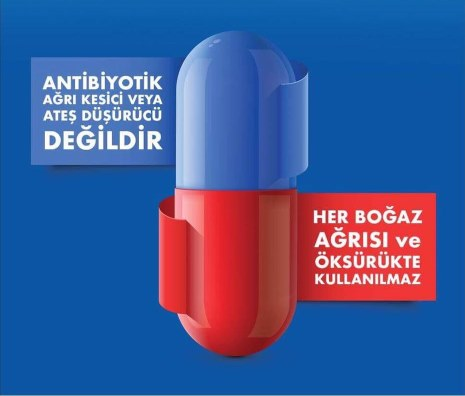

18 KASIM ANTİBİYOTİK FARKINDALIK GÜNÜ

Bugün uygun olmayan ve gereksiz antibiyotik kullanımına HAYIR deme günü.
Çünkü antibiyotik direnci günümüzdeki en önemli halk sağlığı sorunlarından biridir ve maalesef artık ‘’Sessiz Pandemi’’ olarak tanımlanmaktadır. Dünya Sağlık Örgütü verilerine göre 2019’ da dünya çapında yaklaşık 5 milyon insanın ölümü antibiyotiklere dirençli bakterilerin neden olduğu enfeksiyonlar nedeniyle gerçekleşmiştir ve bu sayının 2050 itibariyle kanser, şeker hastalığı, trafik kazası gibi çok alışageldiğimiz ölüm nedenlerini geride bırakarak 10 milyona ulaşacağı öngürülmektedir. Oysa, bu dirençli bakterilere etkili olabilecek yeni bir antibiyotiğin geliştirilmesinin güç ve zahmetli olduğu bilinciyle yapmamız gereken tek şey elimizdeki antibiyotikleri gerektiğinde ve gerektiği kadar kullanmaktır. Çünkü biliyoruz ki antibiyotik direnci doğrudan antibiyotik kullanımı ile ilişkilidir.
Kullanımının fazla olduğu toplumlarda antibiyotik direnci daha yüksektir. Dünya Sağlık Örgütü (DSÖ) küresel olarak farklı disiplinlerde farkındalığı arttırmak için 18-24 Kasım haftasını ‘’Dünya Antibiyotik Farkındalık Haftası’’ ilan etmiştir. Avrupa’ da ve ülkemizde ise 18 Kasım günü 2008 yılından beri ‘’Antibiyotik Farkındalık Günü’’ olarak belirlenmiş olup bu amaçla çeşitli duyurular ve eğitim toplantıları yapılmaktadır.
Antibiyotik direncinin çıkışını mümkün olduğunca geciktirmek için kişisel olarak üzerimize düşen;
- Hekim önermedikçe antibiyotik kullanmamak,
- Hekimin önerdiği süre kadar antibiyotik kullanmak
- Gereksiz antibiyotik kullanımından kaçınmak.
- Reçete olmadan antibiyotiklere erişimi engellemektir. Tüm bu nedenlerle gerek sağlık çalışanlarımızı gerekse tüm toplumu içinde bulunduğumuz Sessiz Pandemiye son vermek için katkı veremeye davet ediyoruz.
HEKİMİNİZ REÇETE ETMEDİĞİ SÜRECE ANTİBİYOTİK KULLANMAYINIZ.

Kaynak: Türk Mikrobiyoloji Cemiyeti
Derleyen: SM. Özgür Kahraman